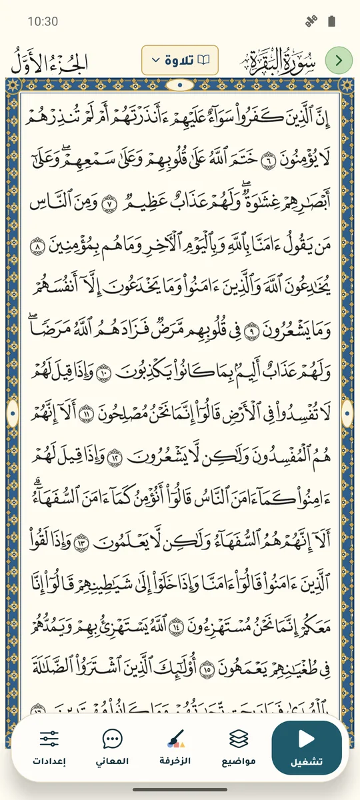
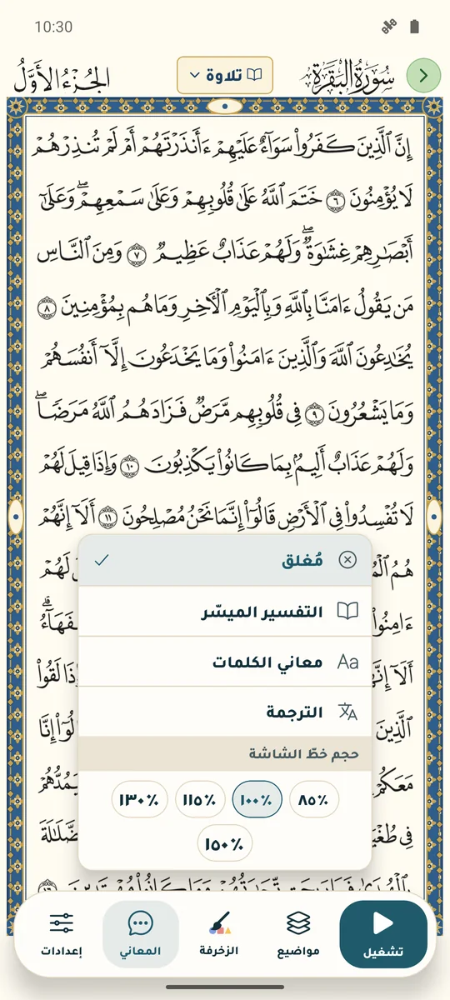
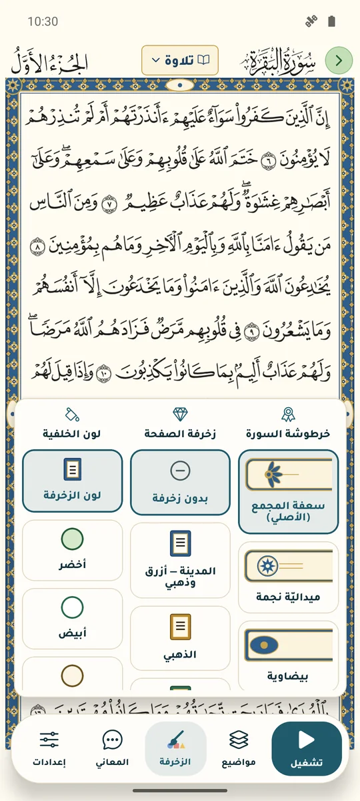
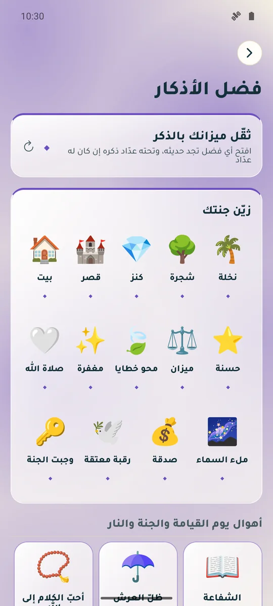
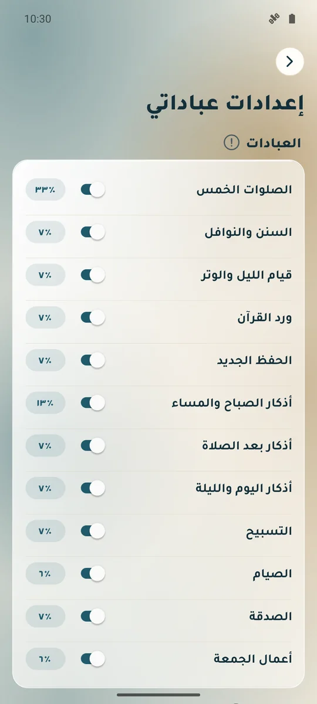
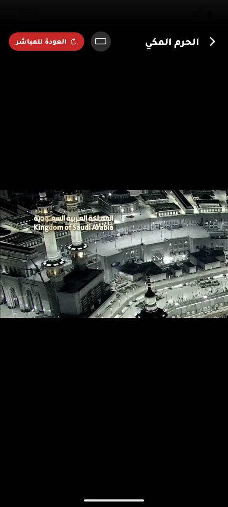

تطبيق وِرد
تطبيق وِرد
عبادات يومك،
أقربَ إليك.
القرآن والأذكار ومواقيت الصلاة وخطة الحفظ، في تطبيقٍ عربيٍّ واحد يعينك على الاستمرار.
- بلا حساب
- بلا إعلانات
- بلا أدوات تتبّع
- بياناتك على جهازك
نسخةٌ تجريبية على أندرويد، تُرسَل بالطلب. وكلُّ الصور هنا لقطاتٌ حقيقية من التطبيق.


١الصلاة
حين يحين الوقت، يصلك النداء.
مواقيت دقيقة تُحسب على جهازك لموقعك أو لمدينة تختارها، وعدّ تنازلي للصلاة القادمة، وتنبيه قبل الأذان وعنده وللإقامة.
مواقيت يومك وشهرك
تنقّل بين الأيام، وافتح جدول الشهر كاملًا. واختر طريقة الحساب المعتمدة في بلدك ومذهبك في العصر، وعدّل التاريخ الهجري يومًا إن خالف الرؤيةَ في بلدك.
- منتصف الليل والثلث الأخير ووقت الضحى، مع تذكير اختياري.
- مواقيت بلد آخر بتوقيته المحلي دون تغيير موقعك.

تنبيهٌ في وقته
لكل صلاة تنبيهها: قبل الأذان بدقائق تحدّدها، وعند دخول الوقت بنصّ قصير أو بصوت مؤذن تختاره، وبعد الأذان للإقامة بمدة مسجدك.
وعلى أندرويد يطلب وِرد إذن «المنبّهات والتذكيرات» ليُجدول الأذان بتوقيت دقيق، ويرشدك إلى استثنائه من توفير البطارية.
النظام لا يشغّل تسجيلًا طويلًا من إشعار مجدول، فيصل التنبيه بصوت الإشعار ويُكمل الأذان حين تفتح التطبيق منه. وتختلف بعض الأجهزة في إيقاف التطبيقات لتوفير البطارية.

٢القرآن الكريم
المصحف كما عرفته، والتفسير على بُعد لمسة.
مصحف المدينة بصفحاته، وطبعة ١٤٢١هـ برسم المطبوع، ونصّ متّصل للاستماع آيةً آية. ولكل نيّة مرجعها: تلاوة وتدبّر وحفظ ومراجعة.
- +١١٠قارئ
- ١٣تفسيرًا
- ١٨ترجمةً مكتوبة في ١٧ لغة
- ٢٦ترجمةً صوتية في ١٩ لغة أجنبية
- ٤مراجع للقراءة
صفحةٌ كالورق
قلّب من الجانب كالمصحف الورقي أو من الأعلى كالتمرير، واختر لون الورق. وتبقى الشاشة مضاءةً ما دمتَ في المصحف.

كلُّ ما يخصّ الآية
المس الآية مرتين: التفسير والتراجم والموضوع ومعاني الكلمات وأسباب النزول والإعراب والبلاغة والمتشابهات، كلٌّ في قسمه. واستمع للآية وحدها، وانسخها أو شاركها.
- ١٣ تفسيرًا، منها الميسّر والمختصر والسعدي وابن كثير، تُنزَّل لتُقرأ بلا اتصال.
- ١٨ ترجمةً للمعاني في ١٧ لغة، صادرة عن مجمع الملك فهد أو جهات رسمية.

استمع بصوت من تحب
أكثر من ١١٠ قرّاء. حدّد بداية التلاوة ونهايتها: من أول الصفحة أو السورة، إلى آخرها أو بالمتابعة. واضبط السرعة من ٠٫٧٥× إلى ٢×، وكرّر المقطع للحفظ، واجعل للتلاوة مؤقّت نوم.
- تُتلى ترجمة الآية بعدها إن شئت: ٢٦ ترجمةً صوتية بصوت بشري في ١٩ لغة أجنبية، هي الإنجليزية والفرنسية والبرتغالية والهولندية والروسية والتركية والأردية والفارسية والأذرية والبوسنية والكازاخية والأوزبكية والصينية والتاغالوغية والفيتنامية والأسامية والتاميلية والسنهالية والصومالية.
- نزّل التلاوة لتسمعها بلا اتصال.
التفسير يرافق التلاوة
تُظلَّل الآية التي تُتلى، ويظهر بجانبها تفسيرها الميسّر أو معاني كلماتها أو ترجمتها، وينتقل معها آيةً بعد آية.
المصحف الموضوعي، وزخرفةٌ تختارها
لوّن الآيات بحسب موضوعها: آيات الله في الكون، والجنة والمؤمنون، والأحكام، وقصص الأنبياء والأمم؛ ودلالة كل لون مكتوبة. واختر خرطوشة اسم السورة وزخرفة الإطار ولون الورق.
ويُلوَّن ما حفظته في المصحف، وتُحسب الصفحة في وردك إذا بقيت عليها نحو عشر ثوانٍ، وتظهر صفحتان متقابلتان إذا أدرت الهاتف.
آيةٌ تشاركها كما هي
بطاقة بخط المصحف تختار لها من ثماني خلفيات بالسحب، ثم تشاركها صورةً.

أكمل من حيث توقفت
لكلّ مرجعٍ صفحتُه وآخرُ ثلاث صفحات زرتَها، وتحفظ أيَّ آيةٍ بضغطةٍ طويلة في «العلامات اليدوية» مع ملاحظةٍ وتذكير. وفي قائمة السور تعريف بكل سورة، ومواضيع القرآن، والتجويد الميسّر.




٣الحفظ والمراجعة
احفظ بخطة، وراجع بانتظام.
اختر من أين تبدأ وكم تحفظ في اليوم وأيام راحتك، فيرتّب وِرد وردك الجديد ومراجعتك القريبة والبعيدة، ويُبعد موعد ما أتقنته ويقرّب ما نسيته.
اختبر حفظك، واعرف ما يحتاج إلى مراجعة
في التسميع تُخفى الآيات؛ اقرأ من حفظك ثم اكشفها لتتحقق، واطلب أول كلمة تلميحًا. وفي الختام قيِّم تسميعك، فيتحدّد موعد المراجعة القادمة.
تتباعد المراجعة مع الإتقان: يوم، ثم يومان، ثم ٤ و٧ و١٤ و٣٠ يومًا.

وللصغار مكانهم
سور قصيرة بألوان ونجوم، واستماع وترديد، وملف لكل طفل وتذكير يومي.

٤الأذكار والمسبحة
«لا يزال لسانك رطبًا من ذكر الله»رواه الترمذي
أذكار الصباح والمساء والنوم وأبواب حصن المسلم والرقية، بعدّاد لكل ذكر وصوت لمن يحب أن يسمع، ومسبحة تحفظ عدد يومك.


اسمع ولو بلا اتصال
نزّل أصوات الأذكار التي تسمعها فقط، قارئًا قارئًا وبابًا بابًا، وبعضها مضمّن في التطبيق أصلًا.
وفي المسبحة أهداف ٣٣ و٩٩ و١٠٠ و١٠٠٠ أو بلا حدّ، وأذكار تضيفها بنفسك. و«التسبيح بالصوت» يعدّ ما تقوله، بإذن الميكروفون وخدمة التعرّف على الكلام في جهازك.

فضل الأذكار: اقرأ الحديث، ثم اذكر
٣٦ بطاقة في ثلاثة أقسام، منها أهوال يوم القيامة والجنة والنار، والقبر. لكلّ فضلٍ حديثه بمصدره ودرجته وشرحه، وتحته عدّاد الذكر نفسه.
زيّن جنتك: يتحوّل عدد ما ذكرتَه إلى ما وُعد به في الحديث؛ فمن قال «سبحان الله العظيم وبحمده» غُرست له نخلة في الجنة، وتراها تُعدّ أمامك: نخلةً وشجرةً وكنزًا وقصرًا وبيتًا.

٥متابعة العبادات
«حاسِبوا أنفسكم قبل أن تُحاسَبوا»من كلام عمر بن الخطاب رضي الله عنه
سجّل صلاتك جماعةً أو منفردًا، وسننك وأذكارك وورد القرآن والصيام. ويعطيك وِرد نسبة يومك من الأقسام التي اخترت متابعتها وحدها.

سجّل يومك
الصلاة جماعةً أو منفردًا أو قضاءً، والسنن والأذكار والورد والصيام، كلٌّ بلمسة.

تابع تقدّمك
ملخّص التزامك بالأهداف التي اخترتها، والعبادات التي سجّلتها خلال الأسبوع على جدول واحد.

خصّص أهدافك
اختر ما تتابعه ووزنه في نسبة يومك، وحدّد وردك من القرآن وتسبيحك وأيام صيامك.
٦المعرفة
علمٌ يُنتفَع به، بين يديك.
مكتبة تُنزَّل كتبها وتُقرأ داخل التطبيق، وقصص الأنبياء والسيرة والصحابة، والتاريخ الإسلامي على أيام السنة، وأسماء الله الحسنى، والحج والعمرة خطوة بخطوة، وإذاعات القرآن والبث المباشر من الحرمين.
- ٥٠٠٥كتب في ١٤ قسمًا
- +٢٥٠إذاعة
- ٣قنوات بث مباشر


البث المباشر
الحرم المكي، والمسجد النبوي، وقناة مكة، بثًّا مباشرًا داخل التطبيق، مع زرّ «العودة للمباشر» وتدوير العرض أفقيًا.
يحتاج اتصالًا بالإنترنت.

٧القبلة والسفر
أينما كنت، تعرف وجهتك.
القبلة بالبوصلة والخريطة
سهم يشير إلى الكعبة ببوصلة جهازك، وخريطة بالخط من موقعك إليها، واختيار مكانك يدويًا إن ضعفت دقّة الموقع.
رخص السفر في وقتها
إذا ابتعدت نحو ٨٠ كم عن مكان إقامتك ذكّرك وِرد بالقصر والجمع، وتُحدَّث المواقيت تلقائيًا بحسب مكانك.
دقّة البوصلة تختلف بين الأجهزة؛ أبعد الهاتف عن المعادن. والمساجد المحيطة تُجلب من OpenStreetMap وقد تنقصها مساجد.


٨الوضع الليلي
هادئ في الليل، والمصحف على ورقه.
فاتح وليلي أو بحسب النظام، وألوان متعددة، وحجم خط يناسبك. ويحتفظ المصحف بلون ورقه في الليل.


٩بياناتك
لا حساب، ولا إعلانات، ولا تتبّع.
سجلّ عباداتك وإعداداتك محفوظ على جهازك، ولا يُرسل إلينا. وتستطيع تصدير نسخة احتياطية في ملف واسترجاعها على أي جهاز.
وبعض الميزات تتصل بخدمات خارجية حين تستعملها: التلاوات والكتب من مصادرها، والخرائط والمساجد من OpenStreetMap، ونتائج البحث في المساعد. وكل ذلك مفصّل في سياسة الخصوصية.
جاهزٌ من أول مرة
بطاقة «إعداد التطبيق» تطلب ما يحتاجه الأذان: الإشعارات، وتحديد موقعك تلقائيًا، والتنبيه في وقته؛ بزرّ واحد أو كلٌّ وحده، أو «لاحقًا».

أسئلة
أسئلةٌ شائعة
هل يعمل وِرد بلا إنترنت؟
نعم في أغلبه: المواقيت والتنبيهات تُحسب على جهازك، والمصحف والأذكار مكتوبةٌ داخل التطبيق. أمّا التلاوات والكتب وبعض التفاسير والخرائط فتحتاج اتصالًا، ويمكن تنزيل كثيرٍ منها مسبقًا لتعمل بلا اتصال.
هل أحتاج إلى حساب؟
لا. لا حساب ولا بريد ولا رقم هاتف، ولا إعلانات ولا أدوات تتبّع.
هل يُرفع الأذان كاملًا والتطبيق مغلق؟
يصلك تنبيه الأذان في وقته بصوت الإشعار، لأن النظام لا يشغّل تسجيلًا طويلًا من إشعارٍ مجدول. فإذا فتحتَ التطبيق من التنبيه أكمل الأذانَ بصوت المؤذن الذي اخترته. ولدقّة التوقيت على أندرويد اسمح بإذن «المنبّهات والتذكيرات».
أين تُحفظ بياناتي، وكيف أنقلها؟
على جهازك وحده. ومن الإعدادات تُصدِّر نسخةً احتياطية في ملف تحفظه أو ترسله لنفسك، ثم تسترجعها على أي جهاز.
هل يتوفر على آيفون؟
النسخة التجريبية الحالية لأندرويد. وإصدار آيفون لم يُختبر بعد.
كيف أجرّب التطبيق؟
اطلب النسخة التجريبية بالبريد، فيصلك رابط التثبيت على أندرويد.
النسخة التجريبية
حالة النسخة التجريبية
جرّبنا الميزات على محاكي أندرويد بالنسخة الحالية، وبعضها يحتاج تجربةً على هاتفٍ حقيقي قبل الحكم عليه. هذه خلاصة ما تحقّقنا منه.
٤٢ جُرِّبت على محاكي أندرويد
- مواقيت الصلاة
- مواقيت الشهر
- التنبيه في وقته (أندرويد)
- أوقات النوافل والليل
- المصحف
- مراجع القراءة
- شاشة الآية
- تشغيل التلاوة
- التفسير يرافق التلاوة
- المصحف الموضوعي
- الزخرفة والخلفية
- مشاركة الآية صورة
- مواضيع القرآن
- التجويد الميسّر
- خطة الحفظ
- تحفيظ الأطفال
- الأذكار
- فضل الأذكار
- قارئ الأذكار
- المسبحة
- عبادات اليوم
- عباداتي
- الأهداف والأقسام
- الإحصائيات
- المحاسبة الأسبوعية
- الصلوات الفائتة
- الصيام
- إمساكية رمضان
- حاسبة الزكاة
- المكتبة
- قصص الأنبياء والسيرة والصحابة
- التاريخ الإسلامي
- أسماء الله الحسنى
- أسئلة اليوم
- الحج والعمرة
- الإذاعات
- البث المباشر
- وضع السفر
- الموقع التلقائي
- إعداد التطبيق
- المظهر
- النسخ الاحتياطي
٩ موثّقة من شيفرة التطبيق
٤ تحتاج تجربةً على هاتف
- تنبيهات الأذان والإقامة — إذن الإشعارات.
- التسبيح بالصوت — إذن الميكروفون وخدمة التعرّف على الكلام في الجهاز.
- اتجاه القبلة — الموقع، وبوصلة الجهاز.
- المساجد المحيطة — الموقع واتصال؛ تُرسل الإحداثيات إلى خوادم OpenStreetMap.

جرّب وِرد على أندرويد
النسخة التجريبية متاحة بالطلب، ورأيك فيها يصنع الإصدار القادم.
اطلب النسخة التجريبيةالفهرس
كل المميزات
لكلّ ميزةٍ فائدتُها ومكانُها وطريقةُ استعمالها، وما تحتاج إليه وحدودُها.
الصلاة والمواقيت
مواقيت الصلاةمواقيت اليوم لموقعك مع عدّ تنازلي للصلاة القادمة.
- مكانها
- الرئيسية، وشاشة الأذان من بطاقة المواقيت.
- طريقة الاستعمال
- تنقّل بين الأيام بالأسهم، والمس «اليوم» للرجوع.
- الخيارات
- طرق حساب متعددة (منها أم القرى والهيئة المصرية ورابطة العالم الإسلامي)، ومذهب العصر، وتعديل التاريخ الهجري يومًا أو يومين.
- ما تحتاجه
- الموقع اختياري: يمكن اختيار المدينة يدويًا. الحساب نفسه على الجهاز.
- حدودها
- التاريخ الهجري بتقويم أم القرى وقد يخالف الرؤية في بلدك بيوم.
مواقيت الشهرجدول مواقيت الشهر كله في صفحة واحدة.
- مكانها
- شاشة الأذان، من البطاقة الأولى.
- طريقة الاستعمال
- افتح الجدول وتنقّل بين الشهور.
تنبيهات الأذان والإقامةتنبيه قبل الأذان بدقائق تحدّدها، وعند الأذان، وبعده للإقامة.
- مكانها
- الإعدادات ← الأذان ← تنبيهات الصلاة.
- طريقة الاستعمال
- فعّل الأذان، ثم اختر لكل صلاة نوع التنبيه وصوته.
- الخيارات
- تنبيه بسيط، أو نصّ «حيّ على الصلاة»، أو أذان كامل بصوت مؤذن تختاره؛ ومدة الإقامة لكل صلاة.
- ما تحتاجه
- إذن الإشعارات.
- حدودها
- النظام لا يشغّل تسجيلًا طويلًا من إشعار مجدول، فيصل بصوت الإشعار ويُكمل الأذان حين تفتح التطبيق منه. تُجدول المواعيد لعدة أيام وتتجدّد عند فتح التطبيق.

التنبيه في وقته (أندرويد)يطلب إذن «المنبّهات والتذكيرات» ليجدول الأذان بتوقيت دقيق بدل التوقيت التقريبي.
- مكانها
- بطاقة «إعداد التطبيق» في الرئيسية، وإعدادات الأذان.
- طريقة الاستعمال
- المس «السماح» ثم فعّل الإذن في شاشة النظام.
- الخيارات
- «الأذان كمنبّه» اختيارًا، مع أيقونة منبّه في شريط الحالة.
- ما تحتاجه
- أندرويد ١٢ فأحدث: إذن المنبّهات والتذكيرات.
- حدودها
- على المحاكي وصل الأذان في دقيقته بعد الإذن. أجهزة بعض الشركات توقف التطبيقات «النائمة»، فيلزم استثناء التطبيق من توفير البطارية.

مواقيت بلد آخرمواقيت أي مدينة بتوقيتها المحلي دون تغيير موقعك.
- مكانها
- شاشة الأذان ← إضافة بلد.
- طريقة الاستعمال
- ابحث عن المدينة، ويمكن تثبيتها بطاقةً في شاشة الأذان.
أوقات النوافل والليلالضحى ومنتصف الليل والثلث الأخير، مع تذكير اختياري.
- مكانها
- إعدادات الأذان.
- طريقة الاستعمال
- فعّل التذكير لكل وقت.
- ما تحتاجه
- إذن الإشعارات للتذكير.
القرآن الكريم
المصحفقراءة المصحف بصفحاته كما في المصحف الورقي.
- مكانها
- تبويب القرآن ← «أكمل من حيث توقفت» أو قائمة السور.
- طريقة الاستعمال
- قلّب بالسحب أو بلمس طرف الصفحة.
- الخيارات
- مصحف المدينة بخط حفص، وطبعة ١٤٢١هـ برسم المطبوع، ونصّ متّصل للاستماع؛ واتجاه التقليب؛ ولون الورق؛ وإبقاء الشاشة مضاءة داخل المصحف.
- ما تحتاجه
- خطوط طبعة ١٤٢١هـ تُنزَّل مرة لتعمل بلا اتصال.
مراجع القراءةأربعة مراجع مستقلة: تلاوة، تدبّر، حفظ، مراجعة؛ لكل منها صفحته.
- مكانها
- زرّ المرجع أعلى المصحف.
- طريقة الاستعمال
- اختر المرجع فيفتح على صفحته، ويحفظ آخر ثلاث صفحات زرتها.
- الخيارات
- الحفظ والمراجعة يتبعان خطة الحفظ إن وُجدت.
شاشة الآيةكل ما يخص الآية في مكان واحد.
- مكانها
- المس الآية مرتين داخل المصحف.
- طريقة الاستعمال
- تنقّل بين الآيات، واستمع للآية وحدها، وانسخها أو شاركها.
- الخيارات
- التفسير، والتراجم، والموضوع، ومعاني الكلمات، وأسباب النزول، والإعراب، والبلاغة، والمتشابهات؛ مع ترتيب الأقسام وإخفائها.
- ما تحتاجه
- الاستماع وبعض التفاسير تحتاج اتصالًا أو تنزيلًا مسبقًا.
- حدودها
- القسم غير المتوفر لآية يظهر برسالة «لا يوجد».
تشغيل التلاوةاستمع من الصفحة نفسها بالقارئ الذي تختاره، من حيث تشاء إلى حيث تشاء.
- مكانها
- زرّ «تشغيل» أسفل المصحف (المس الصفحة لإظهار الشريط).
- طريقة الاستعمال
- اختر السورة والقارئ وبداية التلاوة ونهايتها، ثم «شغّل».
- الخيارات
- البداية من أول الصفحة أو أول السورة، والنهاية عند آخر الصفحة أو آخر السورة أو بالمتابعة؛ والسرعة من ٠٫٧٥× إلى ٢×؛ وتكرار المقطع؛ ومؤقّت نوم من ١٥ إلى ٩٠ دقيقة؛ وتلاوة الترجمة بعد الآية.
- ما تحتاجه
- اتصال، أو تنزيل التلاوة مسبقًا من زرّ «تنزيل».
التفسير يرافق التلاوةتُظلَّل الآية المتلوّة، ويظهر بجانبها تفسيرها أو معاني كلماتها أو ترجمتها، وينتقل معها.
- مكانها
- زرّ «المعاني» أسفل المصحف.
- طريقة الاستعمال
- اختر التفسير الميسّر أو معاني الكلمات أو الترجمة، ثم شغّل التلاوة أو المس الآية.
- الخيارات
- حجم خطّ المربّع من ٨٥٪ إلى ١٥٠٪.
المصحف الموضوعيتلوين الآيات بحسب موضوعها: آيات الله في الكون، والجنة والمؤمنون، والأحكام، وقصص الأنبياء والأمم.
- مكانها
- زرّ «مواضيع» أسفل المصحف.
- طريقة الاستعمال
- فعّل «لوّن الآيات حسب الموضوع»، ودلالة كل لون مكتوبة تحته.
الزخرفة والخلفيةاختر خرطوشة اسم السورة وزخرفة إطار الصفحة ولون الخلفية.
- مكانها
- زرّ «الزخرفة» أسفل المصحف.
- طريقة الاستعمال
- المس الشكل لتراه على الصفحة مباشرة.
- الخيارات
- خراطيش متعددة (منها سعفة المجمع الأصلية)، وزخارف المدينة والذهبي، أو بلا زخرفة؛ وألوان ورق متعددة.
تفاصيل في المصحفتلوين ما حفظته في المصحف، وتسجيل وردك تلقائيًا، وصفحتان متقابلتان في الوضع الأفقي.
- مكانها
- إعدادات المصحف.
- طريقة الاستعمال
- تُحسب الصفحة في وردك إذا بقيت عليها نحو عشر ثوانٍ، وتنتقل بين الأجزاء والسور وأرقام الصفحات من الشريط العلوي.
- الخيارات
- تنزيل تلاوات القرّاء لتعمل بلا اتصال.
مشاركة الآية صورةبطاقة بخط المصحف للمشاركة.
- مكانها
- شاشة الآية ← «مشاركة صورة».
- طريقة الاستعمال
- اسحب يمينًا أو يسارًا لتغيير الخلفية ثم شارك.
- الخيارات
- ثماني خلفيات.

التفاسير والقرّاء والتراجمأكثر من ١١٠ قرّاء، و٢٦ ترجمةً صوتية في ١٩ لغة أجنبية، و١٣ تفسيرًا (منها الميسّر والمختصر والسعدي وابن كثير)، و١٨ ترجمةً للمعاني في ١٧ لغة.
- مكانها
- إعدادات القرآن ← القرّاء والتفاسير / ترجمة المعاني.
- طريقة الاستعمال
- اختر التفسير أو الترجمة ونزّلها لتُقرأ بلا اتصال.
- الخيارات
- «المصحف المعلّم» يقرأ الآية ويترك وقتًا لترديدها.
- ما تحتاجه
- الاستماع يحتاج اتصالًا؛ التنزيل اختياري.
العلامات اليدويةاحفظ آيات بعينها مع ملاحظة وتذكير.
- مكانها
- ضغطة طويلة على الآية؛ والقائمة من مرجع القراءة.
- طريقة الاستعمال
- ضغطة طويلة تحفظ، وأخرى تحذف.
- الخيارات
- تذكير بموعد تختاره، وملاحظة تحت الآية.
- ما تحتاجه
- إذن الإشعارات للتذكير.
مواضيع القرآنآيات القرآن مجمّعة بحسب الموضوع.
- مكانها
- تبويب القرآن ← مواضيع القرآن.
- طريقة الاستعمال
- ابحث عن موضوع أو تصفّح القائمة.

التجويد الميسّركتاب مختصر في أحكام التجويد بفصوله.
- مكانها
- تبويب القرآن ← التجويد الميسّر.
- طريقة الاستعمال
- المس الفصل لقراءته.
- الخيارات
- حجم الخط.

الحفظ والمراجعة
خطة الحفظورد حفظ يومي بقدر تختاره، مع مراجعة قريبة وبعيدة.
- مكانها
- تبويب القرآن ← الحفظ والمراجعة.
- طريقة الاستعمال
- اختر من أين تبدأ وكمية الحفظ اليومية وأيام الراحة.
- الخيارات
- تذكير للجديد وللمراجعة؛ وإجازة من الخطة.
- ما تحتاجه
- إذن الإشعارات للتذكير.
المراجعة المتباعدة والتسميعيحدّد موعد مراجعة كل ما تحفظه بحسب إتقانك.
- مكانها
- الحفظ والمراجعة ← مراجعة اليوم / التسميع.
- طريقة الاستعمال
- في التسميع تُخفى الآيات وتكشفها بعد قراءتها من حفظك، ثم تقيّم نفسك.
- الخيارات
- تلميح بأول كلمة، و«اكشف الكل».
- حدودها
- المواعيد التالية تتباعد مع الإتقان (١، ٢، ٤، ٧، ١٤، ٣٠ يومًا) وتقترب مع النسيان.
تحفيظ الأطفالسور قصيرة بواجهة ملوّنة ونجوم للتقدّم.
- مكانها
- تبويب القرآن ← تحفيظ الأطفال.
- طريقة الاستعمال
- اختر السورة واستمع وردّد.
- الخيارات
- ملفات لأكثر من طفل، وتذكير يومي.
- ما تحتاجه
- الاستماع قد يحتاج اتصالًا.
الأذكار والمسبحة
الأذكارأذكار الصباح والمساء والنوم وأبواب حصن المسلم والرقية.
- مكانها
- تبويب الأذكار.
- طريقة الاستعمال
- افتح الذكر واقرأه بعدّاده، أو استمع إليه.
- الخيارات
- بطاقة علوية تتبدّل بين ذكر وفضله ودعاء؛ وفضل الأذكار بنصوصه ومصادره.
- ما تحتاجه
- الصوت يحتاج اتصالًا ما لم يُنزَّل أو يكن مضمّنًا.
فضل الأذكار٣٦ بطاقة في ثلاثة أقسام، لكلٍّ منها حديثها ومصدره وشرحه، وتحتها عدّاد الذكر نفسه.
- مكانها
- تبويب الأذكار ← فضل الأذكار.
- طريقة الاستعمال
- افتح الفضل الذي تريد، واقرأ الحديث، ثم سبّح بعدّاده.
- الخيارات
- «زيّن جنتك»: يتحوّل عدد ما ذكرته إلى ما وُعد به في الحديث، كالنخلة في الجنة لمن قال «سبحان الله العظيم وبحمده».
- حدودها
- يُذكر مع كل حديث مصدره ودرجته.
قارئ الأذكارذكر واحد في كل صفحة بخط كبير وعدّاد.
- مكانها
- الأذكار ← أذكار الصباح مثلًا.
- طريقة الاستعمال
- المس للعدّ، وتنقّل بين الأذكار بالأسهم.
- الخيارات
- «تشغيل كل الأذكار» صوتًا متتابعة.
- ما تحتاجه
- الصوت يحتاج اتصالًا ما لم يُنزَّل أو يكن مضمّنًا.
صوت الأذكار بلا إنترنتنزّل أصوات الأذكار التي تسمعها فقط.
- مكانها
- إعدادات الأذكار ← الصوت بلا إنترنت.
- طريقة الاستعمال
- نزّل أو احذف كل قارئ وكل باب على حدة.
- الخيارات
- إيقاف التنزيل واستكماله.
- ما تحتاجه
- اتصال وقت التنزيل.
- حدودها
- بعض الأصوات مضمّنة في التطبيق أصلًا.
المسبحةعدّاد للتسبيح بهدف تختاره، يُحفظ عدد كل ذكر في يومه.
- مكانها
- تبويب الأذكار ← المسبحة.
- طريقة الاستعمال
- المس الدائرة للعدّ.
- الخيارات
- أهداف ٣٣ و٩٩ و١٠٠ و١٠٠٠ أو بلا حدّ، وأذكار تضيفها بنفسك، وتذكيرات.
التسبيح بالصوتيعدّ الذكر الذي تقوله بصوتك.
- مكانها
- المسبحة ← التسبيح بالصوت.
- طريقة الاستعمال
- المس الزرّ وابدأ الذكر.
- ما تحتاجه
- إذن الميكروفون وخدمة التعرّف على الكلام في الجهاز.
- حدودها
- لم يُختبر على المحاكي. قد يُعالَج الكلام عبر خدمة النظام (جوجل أو آبل).
متابعة العبادات
عبادات اليومما حان وقته الآن من صلاة وذكر ونافلة، وتسجيله بلمسة.
- مكانها
- الرئيسية ← عبادات اليوم.
- طريقة الاستعمال
- سجّل الصلاة جماعة أو منفردًا أو قضاءً، وابدأ الذكر من مكانه.
- الخيارات
- إخفاء أي بند.
عباداتيسجلّ يومك: الصلوات والسنن والأذكار والورد والصيام، مع نسبة إنجاز.
- مكانها
- تبويب عباداتي.
- طريقة الاستعمال
- تنقّل بين الأيام وسجّل ما أتممته.
- الخيارات
- الأقسام التي تتابعها، والأهداف (الورد والحفظ والتسبيح والصيام).
- حدودها
- النسبة تُحسب من الأقسام التي اخترت متابعتها فقط.
الأهداف والأقساماختر ما تتابعه ووزن كل قسم في نسبة يومك، وحدّد أهدافك.
- مكانها
- عباداتي ← إعدادات عباداتي.
- طريقة الاستعمال
- فعّل الأقسام التي تريدها، واضبط الأهداف بالأزرار.
- الخيارات
- ورد القرآن بالصفحة أو الحزب أو الجزء، والتسبيح اليومي، وأيام الصيام في الأسبوع؛ وتذكير لكل عبادة.
- ما تحتاجه
- إذن الإشعارات للتذكير.
الإحصائياتملخّص التزامك بالأهداف التي اخترتها، أسبوعًا وشهرًا.
- مكانها
- عباداتي ← جميع الإحصائيات.
- طريقة الاستعمال
- تنقّل بين الأسابيع.
- الخيارات
- ملخّصٌ أسبوعي وشهري بإشعارٍ اختياري.
المحاسبة الأسبوعيةالعبادات التي سجّلتها خلال الأسبوع على جدول واحد.
- مكانها
- عباداتي ← المحاسبة.
- طريقة الاستعمال
- للعرض فقط؛ التسجيل من شاشة اليوم.

الصلوات الفائتةيُضاف الفرضُ الذي خرج وقته دون تسجيل، وينقص العدد كلما قضيتَه.
- مكانها
- عباداتي ← الصلوات الفائتة.
- طريقة الاستعمال
- زرّ + كلما قضيت صلاة.
- الخيارات
- تعديل رصيد ما قبل التطبيق.
- حدودها
- يعتمد الحساب على تسجيلك؛ إن صلّيت ولم تسجّل، صحّح السجل.

العذر الشرعييوقف تتبّع الصلوات المعذورة دون أن تنقطع سلسلة أيامك.
- مكانها
- الإعدادات ← العذر الشرعي.
- طريقة الاستعمال
- اختر الصلاة التي بدأ عندها العذر، ثم التي انتهى عندها.
الصيامحكم صيام اليوم، وقضاء رمضان، والستّ من شوال، والأيام المسنونة القادمة.
- مكانها
- المزيد ← الصيام.
- طريقة الاستعمال
- سجّل صيامك وقضاءك.
- حدودها
- التواريخ بتقويم أم القرى.

إمساكية رمضانالإمساك والفجر والإفطار والعشاء لكل يوم من رمضان بموقعك.
- مكانها
- الصيام ← الإمساكية.
- حدودها
- الإمساك قبل الفجر بعشر دقائق احتياطًا.

حاسبة الزكاةحساب زكاة المال والذهب والفضة، مع حول تبدأ عدّه.
- مكانها
- المزيد ← الزكاة.
- طريقة الاستعمال
- أدخل ما تملك، وسجّل بداية الحول ليصلك تذكير.
- الخيارات
- نصاب الذهب أو الفضة.
- ما تحتاجه
- الأسعار اليومية تحتاج اتصالًا ويمكن إدخالها يدويًا.
- حدودها
- للاستئناس، ويُرجع في الأحكام إلى أهل العلم.

المعرفة والمكتبة
المكتبة٥٠٠٥ كتب في ١٤ قسمًا، تُنزَّل وتُقرأ داخل التطبيق.
- مكانها
- المزيد ← المكتبة.
- طريقة الاستعمال
- نزّل الكتاب ثم «قراءة».
- الخيارات
- المفضّلة، والبحث.
- ما تحتاجه
- اتصال وقت التنزيل.
- حدودها
- الكتب الكبيرة قد تُفتح بقارئ النظام.
قصص الأنبياء والسيرة والصحابةسير الأنبياء والسيرة النبوية بمراحلها، وتراجم الصحابة.
- مكانها
- المزيد.
- طريقة الاستعمال
- اختر النبي أو المرحلة.
- ما تحتاجه
- بعض المقاطع المرئية تحتاج اتصالًا.
التاريخ الإسلاميأحداث التاريخ على شهور السنة الهجرية، وتسلسل زمني.
- مكانها
- المزيد ← التاريخ الإسلامي.
- طريقة الاستعمال
- تصفّح بالأيام أو بالتسلسل.
- الخيارات
- تصفية بالمجال.
- حدودها
- التواريخ على المشهور، وفي بعضها خلاف.

أسماء الله الحسنىالأسماء مع معانيها وتلاوتها مرتّلة.
- مكانها
- المزيد.

أسئلة اليومأسئلة قصيرة للمراجعة في أبواب متعددة.
- مكانها
- الرئيسية / المزيد ← اختبر فهمك.
- طريقة الاستعمال
- أجب وراجع الإجابة.
- الخيارات
- تذكير يومي.

الحج والعمرةالمناسك خطوة بخطوة، وعدّاد للطواف والسعي، وخريطة المشاعر وأماكن الزيارة.
- مكانها
- المزيد ← الحج والعمرة.
- طريقة الاستعمال
- اتبع الخطوات بالترتيب.
- ما تحتاجه
- الفيديو والزحام والخريطة تحتاج اتصالًا.
الإذاعاتأكثر من ٢٥٠ إذاعة للقرآن الكريم والتفسير.
- مكانها
- المزيد ← البث المباشر ← الإذاعات.
- طريقة الاستعمال
- اختر الإذاعة لتستمع.
- ما تحتاجه
- اتصالٌ بالإنترنت.
البث المباشرثلاث قنوات مباشرة: الحرم المكي، والمسجد النبوي، وقناة مكة.
- مكانها
- المزيد ← البث المباشر.
- طريقة الاستعمال
- اختر القناة، ويمكن تدوير العرض أفقيًا.
- الخيارات
- زرّ «العودة للمباشر».
- ما تحتاجه
- اتصالٌ بالإنترنت.
- حدودها
- ظهرت الصورة على المحاكي، ولم يُختبر الصوت.
المساعداسأل عن مواقيتك وعباداتك ومحتوى التطبيق.
- مكانها
- من الإعدادات أو الزرّ العائم.
- طريقة الاستعمال
- اكتب سؤالك.
- الخيارات
- يمكن إخفاء الزرّ العائم.
- ما تحتاجه
- يجيب من محتوى التطبيق على الجهاز؛ وأسئلة الأحكام قد تعرض نتائج بحث من الإنترنت.
- حدودها
- نتائج الإنترنت ليست فتوى من التطبيق.
القبلة والمساجد والسفر
اتجاه القبلةسهم إلى الكعبة، وخريطة بالخط إليها من موقعك.
- مكانها
- الأذان ← القبلة.
- طريقة الاستعمال
- أبعد الهاتف عن المعادن واتبع السهم.
- الخيارات
- اختيار مكانك يدويًا من الخريطة.
- ما تحتاجه
- الموقع، وبوصلة الجهاز.
- حدودها
- دقة البوصلة تختلف بين الأجهزة.
المساجد المحيطةالمساجد حولك على خريطة وقائمة بالأقرب.
- مكانها
- الأذان ← المساجد.
- طريقة الاستعمال
- اختر النطاق، والمس المسجد لفتحه في تطبيق الخرائط.
- الخيارات
- نطاق من ١ إلى ١٥ كم.
- ما تحتاجه
- الموقع واتصال؛ تُرسل الإحداثيات إلى خوادم OpenStreetMap.
- حدودها
- البيانات تطوّعية وقد تنقصها مساجد. لم تكتمل الخريطة والقائمة على المحاكي وقت التصوير، فلا لقطة لها هنا.
وضع السفريذكّرك برخص القصر والجمع إذا ابتعدت نحو ٨٠ كم عن مكان إقامتك.
- مكانها
- عباداتي، تلقائيًا.
- طريقة الاستعمال
- «أقمتُ هنا» إذا انتقلت للإقامة.
- ما تحتاجه
- الموقع التلقائي.
الموقع التلقائيتُحدَّث المواقيت تلقائيًا إذا تغيّر مكانك.
- مكانها
- إعدادات الأذان ← الموقع.
- طريقة الاستعمال
- اختر «تلقائي» أو حدّد المدينة يدويًا.
- ما تحتاجه
- إذن الموقع.
- حدودها
- الموقع التقريبي يكفي للمواقيت لا للقبلة.
الإعداد والبيانات
إعداد التطبيقبطاقة أول مرة تطلب ما يحتاجه الأذان: الإشعارات والموقع والتنبيه في وقته.
- مكانها
- أعلى الرئيسية حتى يكتمل أو تؤجّله.
- طريقة الاستعمال
- «تفعيل الكل» أو كل إذن وحده.
- الخيارات
- «لاحقًا».

المظهروضعٌ فاتح وليلي أو بحسب النظام، وألوانٌ متعددة، والشكل الزجاجي، وحجم الخط.
- مكانها
- الإعدادات ← المظهر.
- الخيارات
- المصحف يحتفظ بلون ورقه في الوضع الليلي.
النسخ الاحتياطيتصدير بياناتك إلى ملف واسترجاعها على أي جهاز.
- مكانها
- الإعدادات ← البيانات.
- طريقة الاستعمال
- «حفظ نسخة احتياطية» ثم احفظ الملف أو أرسله لنفسك.
- الخيارات
- يعرض تاريخ النسخة وعدد أيامها قبل الاسترجاع.
- حدودها
- الملف نصّ مقروء؛ احتفظ به في مكان آمن.
الخصوصيةبلا حساب ولا إعلانات ولا أدوات تتبّع؛ بياناتك محفوظة على جهازك.
- مكانها
- الإعدادات ← سياسة الخصوصية.
- ما تحتاجه
- بعض الميزات تتصل بخدمات خارجية (التلاوات، الخرائط، البحث)، وهي مذكورة في السياسة.
- حدودها
- قد تنسخ أنظمة الجهاز بيانات التطبيق إلى حسابك في جوجل أو iCloud إن كان النسخ مفعّلًا.